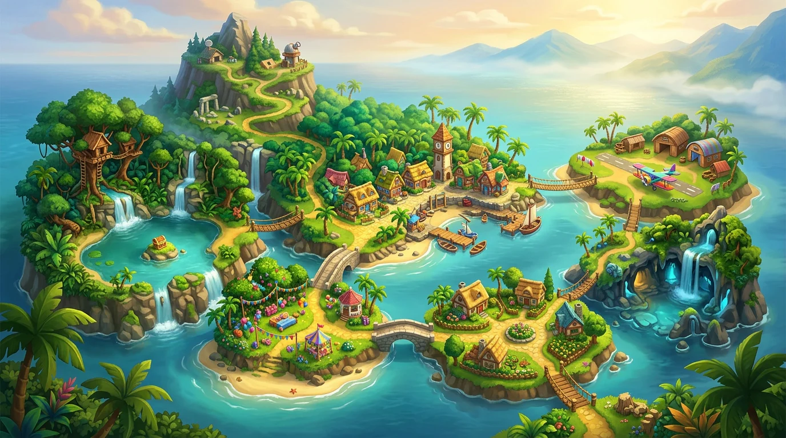

XP conquistados
0
Missões concluídas
0
Sequência de dias
0
Mapa da aventura0%
Complete as missões em ordem para abrir os próximos caminhos. O progresso fica salvo neste dispositivo e neste navegador.
SEU PRÓXIMO DESTINO ESTÁ AQUI
Mapa da Grande Aventura
São 37 missões em 7 mundos. Faça uma por dia, no seu ritmo, Bê!

SEU DIÁRIO DE EXPLORAÇÃOUm mundo inteiro
Um mundo inteiro
de descobertas.
Escolha uma ilha para conhecer suas missões.
● Sua próxima missão✦ Concluída◇ Caminho a desbloquear
✦ FIM DO MAPA. COMEÇO DE MUITAS HISTÓRIAS. ✦
Aprender brincando
Cada missão mistura vocabulário, fala e quiz para manter o estudo leve e divertido.
Clima de aventura
O visual lembra uma jornada de exploração, com fases, recompensas e sensação de conquista.
O Bê é o protagonista
Com mapa e bússola na mão, o Bê explorador acompanha cada descoberta nesta aventura feita para ele.
MISSÃO 001
✦ Dica para a família: incentive a criança a falar em voz alta. Errar faz parte da aventura. O mais importante é praticar todos os dias.